SEMANTROPIC TD · M-05 Biblioteca de 18 agrupaciones ilustradas editables, distribuidas en seis sectores tácticos de Praderas del Amanecer. Cada SVG contiene capas de vegetación, roca/madera, luz y sombras propias. Esta hoja inspecciona fuentes: no es un atlas empaquetado ni una captura del juego.
Entrada · Guardia abandonada entrada-01-centinela-de-brezos 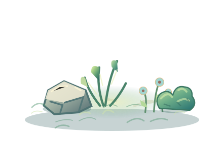
entrada-02-rocales-miel 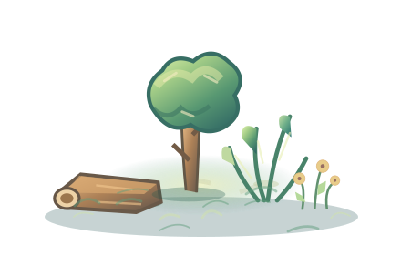
entrada-03-retoño-de-guardia Primer recodo · Tránsito antiguo 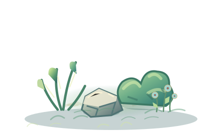
recodo-01-juncos-cobrizos 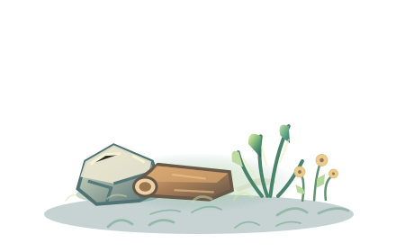
recodo-02-piedras-pisadas recodo-03-bosquecillo-de-viento Valle central · Refugio verde 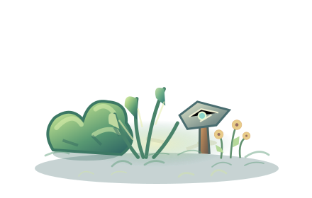
valle-01-helechal-cobertizo 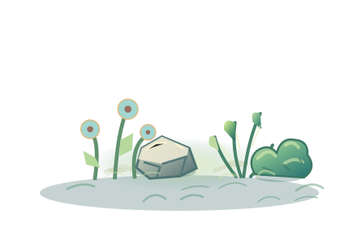
valle-02-claros-azules valle-03-raices-del-refugio Meseta · Viento y pizarra 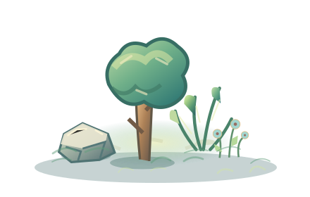
meseta-01-pizarra-y-hebras meseta-02-retamas-del-alto 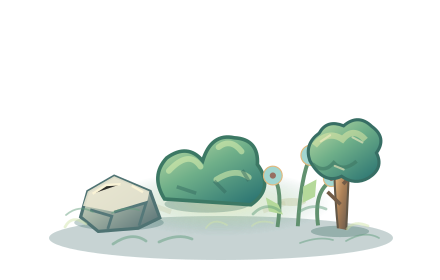
meseta-03-rocas-con-musgo Regreso · Bosquecillo sombreado regreso-01-rosal-de-regreso 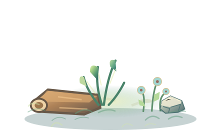
regreso-02-troncos-ribera 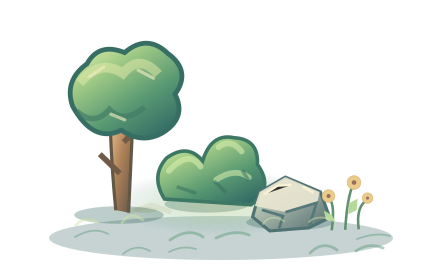
regreso-03-vigias-silvestres Puerta · Últimos suministros 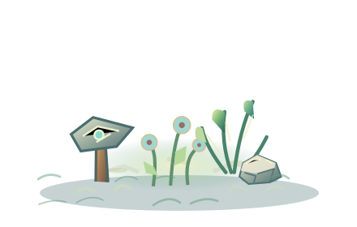
puerta-01-barrera-floral puerta-02-arboleda-de-puerta 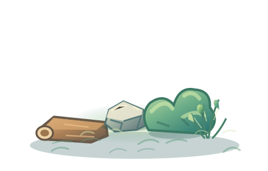
puerta-03-suministros-ocultos Fuente original con asistencia de IA · Equipo M · prototipo visual, pendiente de QA artístico/comercial y capturas reales Phaser.